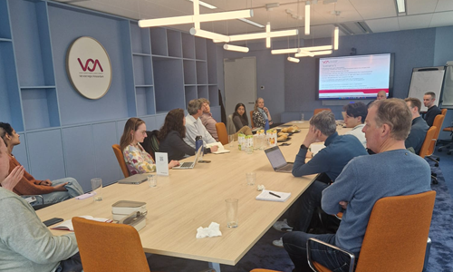

Consortium meeting about AI and mobility hubs at VRA

At the recent consortium meeting of Mobility DesAIgn Lab at the Vervoerregio Amsterdam (VRA), we came together to reflect on progress and jointly look ahead. The meeting opened with a lunch and welcome, followed by an inspiring presentation from Bram Nieuwstraten (VRA), who shared the regional perspective on current mobility challenges and decision‑making processes. TNO then presented a project update, including a live demo of the first prescriptive digital twin developed within the lab, illustrating how AI can actively support design choices rather than only analyzing individual scenarios.
The second half of the meeting focused on in‑depth discussions in three parallel break‑out sessions. These sessions addressed (1) AI‑based decision support systems, (2) the role and requirements of transport models in prescriptive digital twins, and (3) ELSA considerations such as transparency, accountability, and public values. The exchanges highlighted both technical opportunities and governance challenges, and helped sharpen next research steps. The meeting concluded with a joint wrap‑up and a summary of follow-up actions.